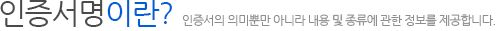
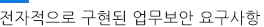
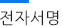
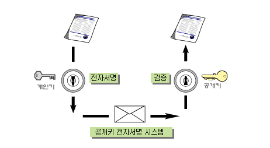

- 인증센터 이해하기
- 인증서비스 안내
- 인증서란?
- 사용자안내서
- 도움말
- 전자서명이란?
- 만화로보는 전자서명
- 
- 
-
 전자적 업무를 안전하게 하기 위한 보안 요구사항은 크게 인증(Authentication), 무결성(Integrity), 비밀성(Confidentiality) 및 부인봉쇄(Non-Repudiation) 등 4가지로 분류할 수 있고 이와 같은 요구사항을 충족하기 위한 보안기술은 다음과 같은 표로 정리해 볼 수 있습니다.
전자적 업무를 안전하게 하기 위한 보안 요구사항은 크게 인증(Authentication), 무결성(Integrity), 비밀성(Confidentiality) 및 부인봉쇄(Non-Repudiation) 등 4가지로 분류할 수 있고 이와 같은 요구사항을 충족하기 위한 보안기술은 다음과 같은 표로 정리해 볼 수 있습니다.- 보안요구사항 인증 무결성 부인봉쇄 비밀성 보안기술 전자서명 암호화
| 보안요구사항 |
인증 |
무결성 |
부인봉쇄 |
비밀성 |
| 보안기술 |
전자서명 |
암호화 |
- 인증 : 전자업무의 당사자가 본인임을 증명하는 것을 말합니다.
- 무결성 : 전자문서의 위.변조여부를 검출할 수 있는 기능을 말합니다.
- 전자문서를 송신자 및 적법한 수신자를 제외한 제3자는 볼 수 없도록 하는 기능을 말합니다.
- 부인봉쇄 : 전자문서를 송, 수신하는 당사자가 송·수신 행위를 부인할수 없도록 하는 기능을 말합니다.
- 전자문서의 비밀성을 보장해 주는 기술이 암호화 기술이며, 전자서명 기술은 상대방의 신원확인, 거래내용의 위, 변조방지, 거래사실의 부인방지 등을 보장해 주는 기술인 것입니다. 결국 비대면 방식의 전자적 업무처리환경에서는 전자서명기술이 필연적으로 요구되어지는 것입니다.
- 
-
- - 전자서명이란 무엇일까?
- 전자서명은 전자문서를 작성한 자의 신원과 전자 문서의 변경 여부를 확인할 수 있도록 비대칭 암호화방식을 이용하여 전자서명생성키로 생성한 정보로서 당해 전자문서에 고유한 것을 말합니다.
- - 전자서명기술
- 전자서명기술은 공개키와 냅壙같?합치성(Correspondence)의 특성을 이용하여 전자문서를 수신한 상대방이 송신자의 신원확인, 전자문서의 위.변조 방지, 전자문서의 송신사실의 부인 방지를 할 수 있는 기술을 말합니다. 공개키 암호기술에 기반을 둔 전자서명기술은 개인키(Private Key)와 공개키(Public Key) 라는 두 개의 키를 이용하여 문서를 전자서명하고 이를 검증하는 기술로 공개키암호기술에서 개인키는 사용자 자신만이 알고있는 키를 말하며,사용자는 이 키를 이용하여 문서에 전자서명을 하게 됩니다.
- 공개키는 이 개인키에 대응하는 키로서, 문서를 수신할 상대방은 공개키를 이용하여 전자서명된 문서를 검증합니다. 개인키로 전자서명된 문서는 이에 대응하는 공개키를 가진 사람만이 그 서명을 검증할 수 있습니다. 전자서명된 문서가 A의 공개키로 검증된다면 이 문서는 A의 개인키로 전자서명된 것임을 알 수 있습니다.
- 